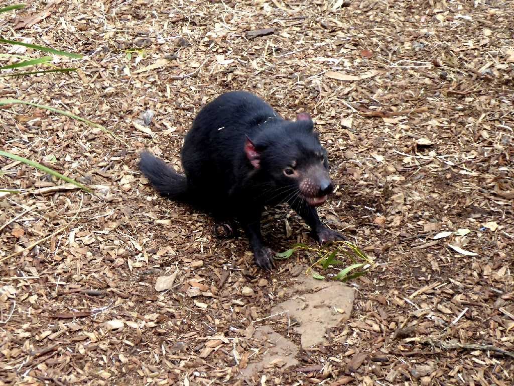
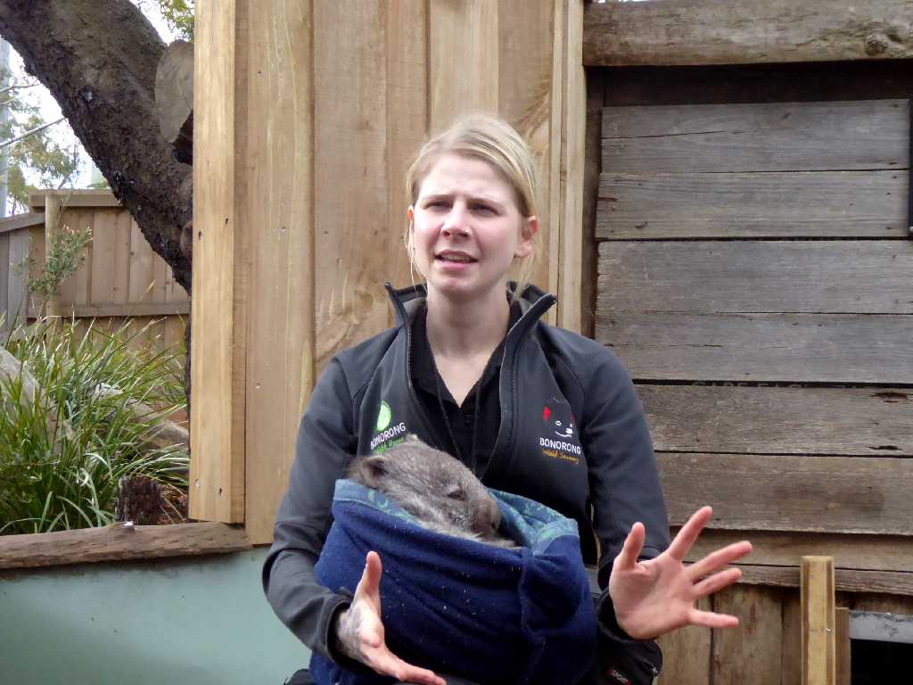
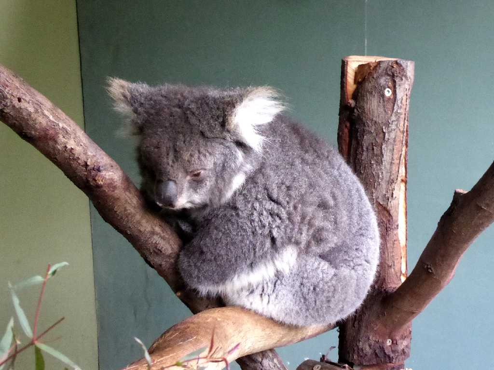
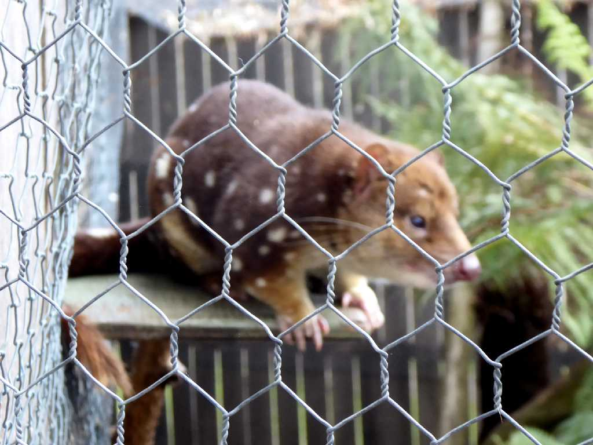
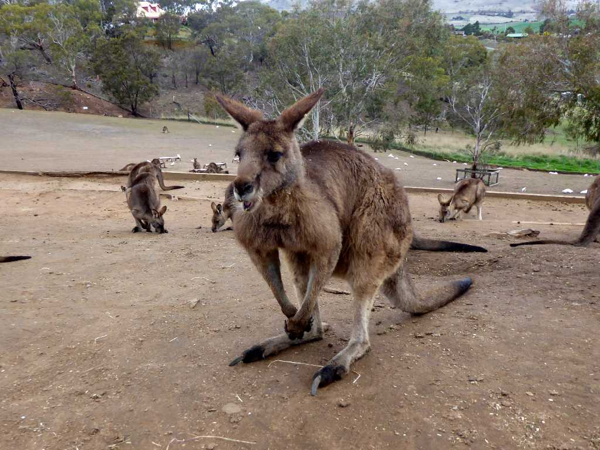
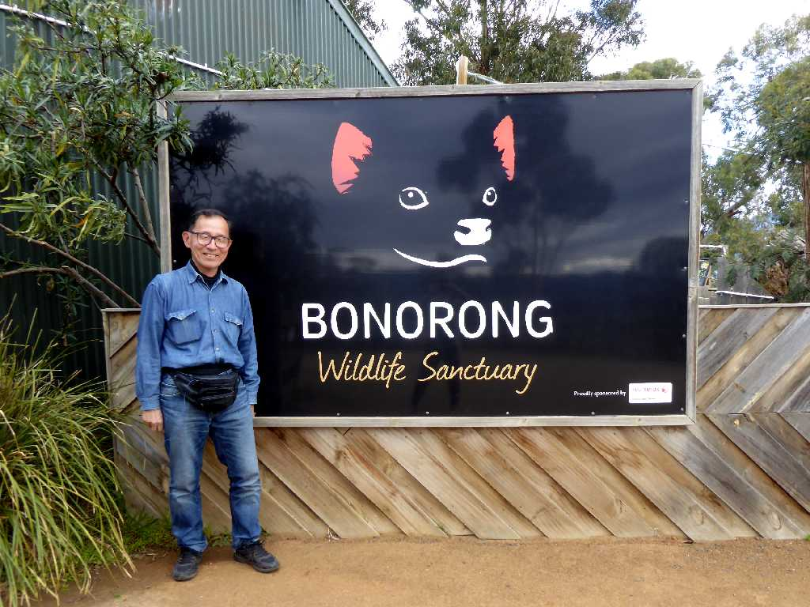

Tasmanian Devil Bonorong Wildlife Sanctuary Tasmania
ボノロン野生動物保護区に保護されている現生で世界最大の肉食有袋類タスマニアデビル

Wombat Bonorong Wildlife Sanctuary Tasmania
タスマニア州の低木林や草原に生息する草食有袋類ウォンバット

Koala Bonorong Wildlife Sanctuary Tasmania
オーストラリア東部のユーカリの森林地帯に生息するぬいぐるみのような可愛い草食有袋類コアラ

Tiger Quoll Bonorong Wildlife Sanctuary Tasmania
オーストラリアの熱帯雨林や低木林に生息する有袋類オオフクロネコ

Kangaroo Bonorong Wildlife Sanctuary Tasmania
タスマニア島に生息する小ぶりなカンガルー

September 10 2019 Bonorong Wildlife Sanctuary